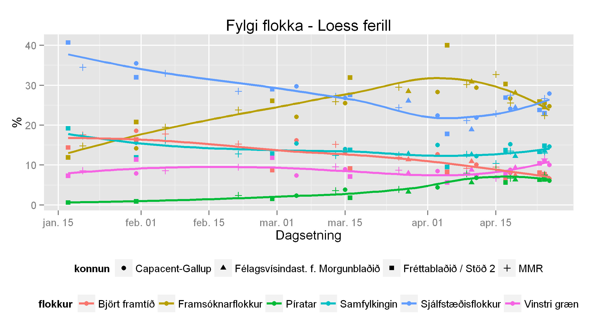
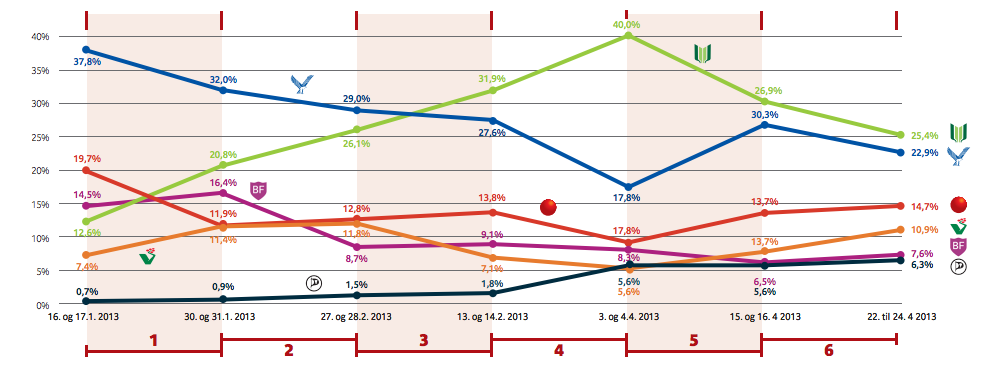

Fylgi flokkanna á kjördag
Í gær birtum við nokkur gröf um þróun fylgis flokka í þessum pósti hér en á þeim tíma sem myndirnar voru plottaðar og til dagsins í dag hafa bæst við þrjár kannanir í gagnasettið. Í dag er kjördagur og því liggur nokkuð ljóst fyrir að seinustu fylgiskannanir eru komnar í hús. Því er ekkert minna en sjálfsagt að keyra aftur út greiningar á fylginu miðað við nýjustu mælipunkta. Svona lítur því fylgið út á kjördag, samkvæmt fylgiskönnunum: 
{kind=link}
Frá því í gær hefur ekki mikið óvænt gerst. Sjálfstæðisflokkur heldur áfram að vinna á og Framsókn dalar. Því verður það fullyrt hér að Sjálfstæðisflokkurinn verður „sigurvegari“ kosninganna í dag. Eða öllu heldur sá flokkur sem nær mestu fylgi. Spurningin er bara hvort flokkurinn nái að komast yfir 30% eða ekki. Ríkisstjórnarflokkarnir Vinstri græn og Samfylkingin halda áfram að bæta við sig fylgi, en þetta of lítið og of seint. Björt framtíð heldur áfram að rúlla niður brekkuna sína eins og þau hafa gert allt árið, og upp á síðkastið hefur hún bara orðið brattari ef eitthvað er. Hjá flokki sem vill minna vesen, er þetta töluvert vesen hjá þeim. Píratar, sem hófu árið á mælingu vel undir prósenti, hafa verið á góðri siglingu alla kosningabaráttuna og náð árangri sem væntanlega kom mörgum á óvart. Kannski ekki síst þeim sjálfum. En kálið er ekki sopið þó í ausuna sé komið og meðbyrinn virðist hafa minnkað seinustu daga og viku og vísar nú enda línunnar niður á við. Kjördagur hlýtur því að vera dagur varnarbarráttu nýju framboðanna.
Stóra myndin í fylgisþróun
Til samanburðar á myndinni að ofan um fylgisþróun flokkana er ágætt að bera hana saman við mynd sem birtist í Fréttablaðinu í dag í góðri samantekt Kolbeins Óttarssonar Proppé á kosningabaráttunni . Þar fylgir eftirfarandi mynd umfjölluninni og sýnir mælingar Fbl./S2 á fylgi flokkanna. 
{kind=link}
Hér má sjá glöggt sjá muninn á þessum tveimur framsetningum. Munurinn á grafi Fbl. og grafi okkar er nokkur. Hjá Fréttablaðinu er ekki að sjá að Framsókn og Sjálfstæðisflokkur stefna í sitthvora áttina; Framsókn niður í fylgi og Sjálfstæðisflokkur upp. Björt framtíð og Píratar virðast jafnvel vera að bæta við sig fylgi, en ekkert slíkt í að sjá í okkar greiningu, þar sem allar mælingar sem okkur standa til boða eru notaðar. Það er því spurning hví Fréttablaðið kýs nota einungis sínar eigin fylgiskannanir en ekki aðrar sem liggja á lausu. Einfalt fréttamat getur ekki ráðið því, ekki nema að fréttamatið sé að aðrar fylgiskannanir séu ónothæfar.
Samanburður mælinga
Hér að neðan má svo sjá samanburð á fylgismælingum flokkana. Það getur verið ágætt að velta því fyrir sér hvort það sé möguleiki á einhverjum „house effects“ hjá mismunandi könnunarfyrirtækjum þegar litið er yfir þessi gröf; þ.e.a.s. hvort könnunaraðilar mæli einhverja flokka alla jafna hærri eða lægri en aðrir.
{kind=link}
Fylgi einstakra flokka
{kind=link}
{kind=link}
{kind=link}
{kind=link}
{kind=link}
{kind=link}
Gleðilegan kjördag, allir saman!
- Helgi Eiríkur Eyjólfsson, helgi.eirikur@gmail.com, @svelgur
Sérstök pólitík að láta eins og Dögun og Lýðræðisvaktin og Hægri græn séu ekki til. Þetta eru flokkar sem gætu náð fólki inn óvænt ef þau fá smá upswing í lokin..